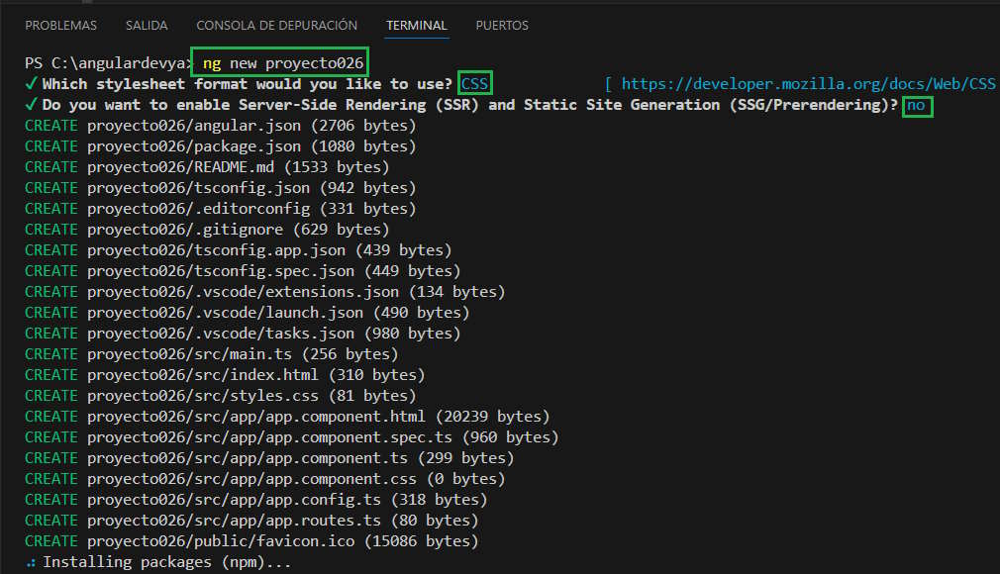

Hemos trabajado por un tiempo desarrollando ejercicios con el framework de Angular 19, pero no nos hemos detenido para analizar en profundidad los archivos y carpetas que se generan cada vez que creamos un proyecto.
Pana analizar los archivos y carpetas crearemos un nuevo proyecto:
ng new proyecto026
Lo primero que puede variar esta estructura son que decisiones tomamos para indicar si queremos utilizar formato de hojas de estilo y Server-Side rendering (seleccionemos los datos por defecto es decir CSS y no Server-Side rendering):
Si analizamos el contenido de la carpeta que se crea 'proyecto026' nos puede intimidar la cantidad de carpetas y archivos que contiene:
La carpeta 'proyecto026' creada con Angular 19 tiene 9 archivos y 4 carpetas:
.editorconfig Este archivo define estilos de codificación consistentes para múltiples desarrolladores que trabajan en el mismo proyecto con editores de texto distinto. No hay problemas de estilo si un desarrollador utiliza el VS Code y otro el Sublime Text, ya que ambos editores tomarán en cuenta las definiciones contenidas en .editorconfig:
# Editor configuration, see https://editorconfig.org root = true [*] charset = utf-8 indent_style = space indent_size = 2 insert_final_newline = true trim_trailing_whitespace = true [*.ts] quote_type = single [*.md] max_line_length = off trim_trailing_whitespace = false
Para modificar este archivo podemos consultar el sitio que define su estándar editorconfig.org
.gitignore Especifica los archivo y carpetas que debe ignorar el sistema de control de versiones (Git)
# See http://help.github.com/ignore-files/ for more about ignoring files. # Compiled output /dist /tmp /out-tsc /bazel-out # Node /node_modules npm-debug.log yarn-error.log # IDEs and editors .idea/ .project .classpath .c9/ *.launch .settings/ *.sublime-workspace # Visual Studio Code .vscode/* !.vscode/settings.json !.vscode/tasks.json !.vscode/launch.json !.vscode/extensions.json .history/* # Miscellaneous /.angular/cache .sass-cache/ /connect.lock /coverage /libpeerconnection.log testem.log /typings # System files .DS_Store Thumbs.db
angular.json Se definen valores por defecto para la configuración del proyecto para las herramientas de compilación y desarrollo:
{
"$schema": "./node_modules/@angular/cli/lib/config/schema.json",
"version": 1,
"newProjectRoot": "projects",
"projects": {
"proyecto026": {
"projectType": "application",
"schematics": {},
"root": "",
"sourceRoot": "src",
"prefix": "app",
"architect": {
"build": {
"builder": "@angular-devkit/build-angular:application",
"options": {
"outputPath": "dist/proyecto026",
"index": "src/index.html",
"browser": "src/main.ts",
"polyfills": [
"zone.js"
],
"tsConfig": "tsconfig.app.json",
"assets": [
{
"glob": "**/*",
"input": "public"
}
],
"styles": [
"src/styles.css"
],
"scripts": []
},
"configurations": {
"production": {
"budgets": [
{
"type": "initial",
"maximumWarning": "500kB",
"maximumError": "1MB"
},
{
"type": "anyComponentStyle",
"maximumWarning": "4kB",
"maximumError": "8kB"
}
],
"outputHashing": "all"
},
"development": {
"optimization": false,
"extractLicenses": false,
"sourceMap": true
}
},
"defaultConfiguration": "production"
},
"serve": {
"builder": "@angular-devkit/build-angular:dev-server",
"configurations": {
"production": {
"buildTarget": "proyecto026:build:production"
},
"development": {
"buildTarget": "proyecto026:build:development"
}
},
"defaultConfiguration": "development"
},
"extract-i18n": {
"builder": "@angular-devkit/build-angular:extract-i18n"
},
"test": {
"builder": "@angular-devkit/build-angular:karma",
"options": {
"polyfills": [
"zone.js",
"zone.js/testing"
],
"tsConfig": "tsconfig.spec.json",
"assets": [
{
"glob": "**/*",
"input": "public"
}
],
"styles": [
"src/styles.css"
],
"scripts": []
}
}
}
}
}
}
"prefix": "app"
"prefix" es una cadena que Angular antepone a los selectores generados. Por ejemplo la componente por defecto que se crea:
import { Component } from '@angular/core';
import { RouterOutlet } from '@angular/router';
@Component({
selector: 'app-root',
imports: [RouterOutlet],
templateUrl: './app.component.html',
styleUrl: './app.component.css'
})
export class AppComponent {
title = 'proyecto026';
}
Si creamos una componente llamada 'dado' luego su selector toma el nombre 'app-dado':
@Component({
selector: 'app-dado',
imports: [],
templateUrl: './dado.component.html',
styleUrl: './dado.component.css'
})
export class DadoComponent {
}
La carpeta raíz para los archivos fuente del proyecto esta definido en:
"sourceRoot": "src"
En la entrada "assets" hacemos referencia a los archivos estáticos del proyecto y las carpetas donde se almacenan, recordemos en el problema donde necesitabamos insertar archivos *.jpg los cargamos en la carpeta 'assets':
"assets": [
"src/favicon.ico",
"src/assets"
],
En la entrada styles especificamos todos los archivos de hoja de estilo globales al proyecto (styles.css es uno que se ha creado por defecto):
"styles": [
"src/styles.css"
],
Por ejemplo si queremos tener acceso solo a la hoja de estilo de BootStrap 'bootstrap.min.css', solo debemos copiar dicho archivo en la carpeta 'src' o una subcarpeta de la misma y especificar su path:
"styles": [
"src/styles.css",
"src/bootstrap.min.css"
],
En la entrada scripts especificamos los archivos de script JavaScript para agregar al contexto global del proyecto:
"scripts": []
Por ejemplo si queremos tener acceso al archivo JavaScript de BootStrap 'bootstrap.min.js', debemos copiar dicho archivo y el jquery en la carpeta 'src' o una subcarpeta de la misma y especificar su path:
"scripts": ["src/jquery-3.4.1.min.js",
"src/bootstrap.min.js"]
El orden en que los listamos es importante, primero debe ser el jquery y seguidamente el bootstrap.min.js (según sus dependencias, en este caso BootStrap depende de la librería JQuery)
package.json Configura las dependencias del paquete npm que están disponibles para todos los proyectos en el espacio de trabajo.
{
"name": "proyecto026",
"version": "0.0.0",
"scripts": {
"ng": "ng",
"start": "ng serve",
"build": "ng build",
"watch": "ng build --watch --configuration development",
"test": "ng test"
},
"private": true,
"dependencies": {
"@angular/animations": "^19.0.0",
"@angular/common": "^19.0.0",
"@angular/compiler": "^19.0.0",
"@angular/core": "^19.0.0",
"@angular/forms": "^19.0.0",
"@angular/platform-browser": "^19.0.0",
"@angular/platform-browser-dynamic": "^19.0.0",
"@angular/router": "^19.0.0",
"rxjs": "~7.8.0",
"tslib": "^2.3.0",
"zone.js": "~0.15.0"
},
"devDependencies": {
"@angular-devkit/build-angular": "^19.0.2",
"@angular/cli": "^19.0.2",
"@angular/compiler-cli": "^19.0.0",
"@types/jasmine": "~5.1.0",
"jasmine-core": "~5.4.0",
"karma": "~6.4.0",
"karma-chrome-launcher": "~3.2.0",
"karma-coverage": "~2.2.0",
"karma-jasmine": "~5.1.0",
"karma-jasmine-html-reporter": "~2.1.0",
"typescript": "~5.6.2"
}
}
El archivo se organiza indicando primero en la propiedad "dependencies" todos los paquetes requeridos para la aplicación que estamos desarrollando, y en segundo lugar en la propiedad "devDepencencies" se hace referencia a todos los paquetes requeridos para desarrollar la aplicación.
Los paquetes que se declaran en el archivo corresponden a:
Paquetes de Angular: núcleo angular y módulos opcionales; comienzan los nombres de sus paquetes @angular/
Paquetes de soporte : bibliotecas de terceros que deben estar presentes para que se ejecuten las aplicaciones de Angular
Paquetes Polyfill : Polyfills tapan huecos en la implementación de JavaScript que no disponen algunos navegadores.
package-lock.json Proporciona información de versión para todos los paquetes instalados en la carpeta node_modules por el cliente npm (no lo mostramos ya que tiene más de 15000 líneas)
tsconfig.json Especifica la configuración predeterminada del lenguaje TypeScript para proyectos en el espacio de trabajo.
/* To learn more about Typescript configuration file: https://www.typescriptlang.org/docs/handbook/tsconfig-json.html. */
/* To learn more about Angular compiler options: https://angular.dev/reference/configs/angular-compiler-options. */
{
"compileOnSave": false,
"compilerOptions": {
"outDir": "./dist/out-tsc",
"strict": true,
"noImplicitOverride": true,
"noPropertyAccessFromIndexSignature": true,
"noImplicitReturns": true,
"noFallthroughCasesInSwitch": true,
"skipLibCheck": true,
"isolatedModules": true,
"esModuleInterop": true,
"experimentalDecorators": true,
"moduleResolution": "bundler",
"importHelpers": true,
"target": "ES2022",
"module": "ES2022"
},
"angularCompilerOptions": {
"enableI18nLegacyMessageIdFormat": false,
"strictInjectionParameters": true,
"strictInputAccessModifiers": true,
"strictTemplates": true
}
}
tsconfig.spec.json Configuración de TypeScript para las pruebas de aplicación.
/* To learn more about Typescript configuration file: https://www.typescriptlang.org/docs/handbook/tsconfig-json.html. */
/* To learn more about Angular compiler options: https://angular.dev/reference/configs/angular-compiler-options. */
{
"extends": "./tsconfig.json",
"compilerOptions": {
"outDir": "./out-tsc/spec",
"types": [
"jasmine"
]
},
"include": [
"src/**/*.spec.ts",
"src/**/*.d.ts"
]
}
tsconfig.app.json Configuración de TypeScript específica de la aplicación , incluidas las opciones de compilación de plantillas de TypeScript y Angular.
/* To learn more about Typescript configuration file: https://www.typescriptlang.org/docs/handbook/tsconfig-json.html. */
/* To learn more about Angular compiler options: https://angular.dev/reference/configs/angular-compiler-options. */
{
"extends": "./tsconfig.json",
"compilerOptions": {
"outDir": "./out-tsc/app",
"types": []
},
"files": [
"src/main.ts"
],
"include": [
"src/**/*.d.ts"
]
}
README.md Primer archivo que deberíamos leer cuando accedemos a un proyecto nuevo.
# Proyecto026 This project was generated using [Angular CLI](https://github.com/angular/angular-cli) version 19.0.2. ## Development server To start a local development server, run: ```bash ng serve ``` Once the server is running, open your browser and navigate to `http://localhost:4200/`. The application will automatically reload whenever you modify any of the source files. ## Code scaffolding Angular CLI includes powerful code scaffolding tools. To generate a new component, run: ```bash ng generate component component-name ``` For a complete list of available schematics (such as `components`, `directives`, or `pipes`), run: ```bash ng generate --help ``` ## Building To build the project run: ```bash ng build ``` This will compile your project and store the build artifacts in the `dist/` directory. By default, the production build optimizes your application for performance and speed. ## Running unit tests To execute unit tests with the [Karma](https://karma-runner.github.io) test runner, use the following command: ```bash ng test ``` ## Running end-to-end tests For end-to-end (e2e) testing, run: ```bash ng e2e ``` Angular CLI does not come with an end-to-end testing framework by default. You can choose one that suits your needs. ## Additional Resources For more information on using the Angular CLI, including detailed command references, visit the [Angular CLI Overview and Command Reference](https://angular.dev/tools/cli) page.